教程：快速入门
本教程介绍首次使用 3DEC 时的基本步骤，帮助新用户熟悉新建项目和建立简单块体模型的操作。教程将逐步完成一个简单的楔形体破坏示例，并解释和图示如何使用鼠标以及在 3DEC 控制台中输入的脚本命令进行交互控制。
主题：
- 刚性块体
- 节理
- 历史
- 图形用户界面与绘图操作
命令：BLOCK CREATE, BLOCK DELETE, BLOCK FIX, BLOCK GROUP, BLOCK HIDE, BLOCK CUT, BLOCK PROPERTY, MODEL CYCLE, MODEL GRAVITY, MODEL SAVE
FISH：无
- 文件：“Users_Guide/getting_started/simple_wedge/simple_wedge.prj”
- “Users_Guide/getting_started/simple_wedge/simple_wedge.dat”
项目
启动 3DEC 后，将显示一个包含所用版本信息的对话框。对话框底部提供几个与项目有关的启动选项。项目是一种将用于 3DEC 问题求解的相关数据文件、FISH 文件、图形等归集在一起的方式。在提示界面中选择“新建项目（New Project）…”。

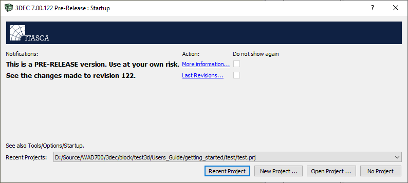
图 1：启动时的项目文件加载选项
此时出现保存提示。单击左侧的 My Projects 目录，将新项目保存为“getting_started.prj”。安装 3DEC 时，会在 Documents/Itasca/3dec700 中创建一个名为 My Projects 的目录。该目录适合用来存放您自己的项目。

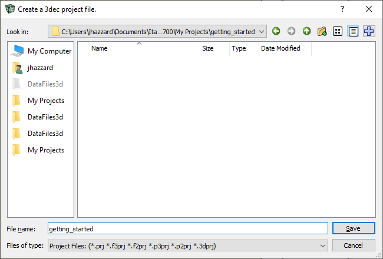
图 2：项目文件保存对话框
完成本教程所使用的命令将保存在一个数据（٭.dat）文件中。要创建新数据文件，请选择，或按 Ctrl+N。将新数据文件保存为“simple_wedge.dat”，并放在项目文件（“getting_started.prj”）所在的文件夹中。
布局
3DEC 的 GUI（图形用户界面）包含用于显示数据文件、图形、命令控制台和项目文件的面板。3DEC GUI 的窗格布局可按用户偏好自定义。“布局（Layout）”菜单中提供若干预定义布局选项，包括“水平（Horizontal）”“垂直（Vertical）”“单窗格（Single）”“宽屏（Wide）”和“项目（Project）”。也可以通过鼠标将不同窗格拖到所需位置，设置喜欢的 3DEC 布局，然后保存并恢复该布局。窗格就位后，单击“布局（Layout）”，选择“保存布局（Save layout）…”。随后出现提示，要求指定布局文件的保存位置。恢复已保存的布局偏好时，需要使用这个位置。
选择，屏幕应显示为图中所示的样式。

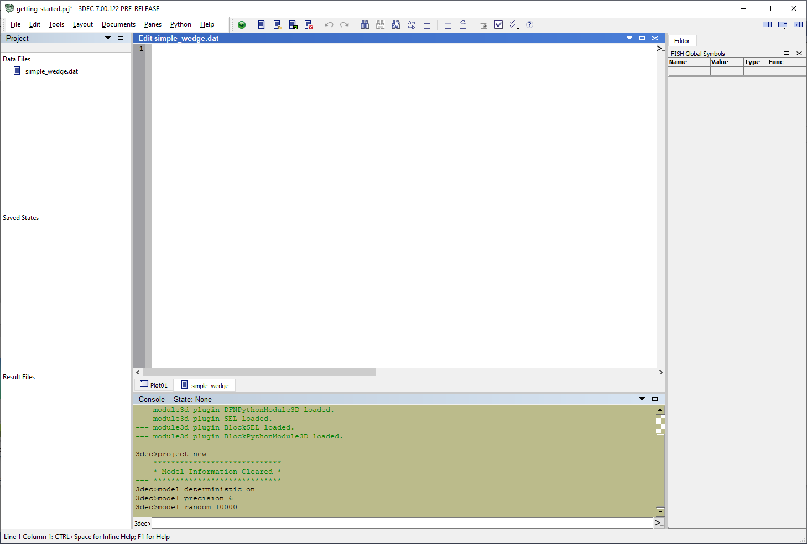
图 3：3DEC 的“宽屏（Wide）”布局
新建的数据文件列在左侧的“数据文件（Data Files）”下。空白数据文件本身占据主窗格。命令控制台位于底部。显示数据文件时，右侧显示全局 FISH 符号表。显示图形时，右侧显示绘图控件（选择 Plot01 选项卡即可查看）。
创建模型
现在可以开始输入命令来创建模型。可以先将命令输入文件，稍后执行；也可以在底部控制台中逐条输入。建议将命令输入文件，这样可以保存命令，并方便地多次运行同一组命令。
以下命令将清除先前的模型信息，创建初始块体并指定块体尺寸。我们使用 创建砖块命令（block create brick） 命令指定一个多面体块体。
model new
block create brick (0,80) (-30,80) (0,50)
这将创建一个尺寸为 80 × 110 × 50 的块体。任何时候，都可以按 Ctrl + spacebar 查看某条命令之后可用的关键字。单击显示的关键字后，将出现后续关键字。这样只需少量输入或记忆关键字，即可构建命令。任何时候，也都可以按 F1 打开手册中与该命令或关键字有关的部分。

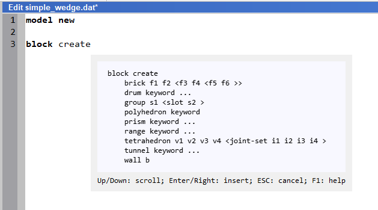
图 4：3DEC 中的上下文相关帮助示例。
单击绿色执行按钮，执行该文件。

要查看图形，请选择编辑器窗口下方的 Plot01 选项卡。此时右侧将显示绘图控件。选择图中所示的“构建图形（Build Plot）”按钮。

此时会显示所有可用绘图项的列表。选择“块体（Block）”，然后单击“确定（OK）”。

该单个块体现在应显示在绘图窗口中。模型的默认视图方向平行于 \(xz\) 平面。尝试按住鼠标右键并移动鼠标，以旋转图形。下图显示了旋转后的块体视图。

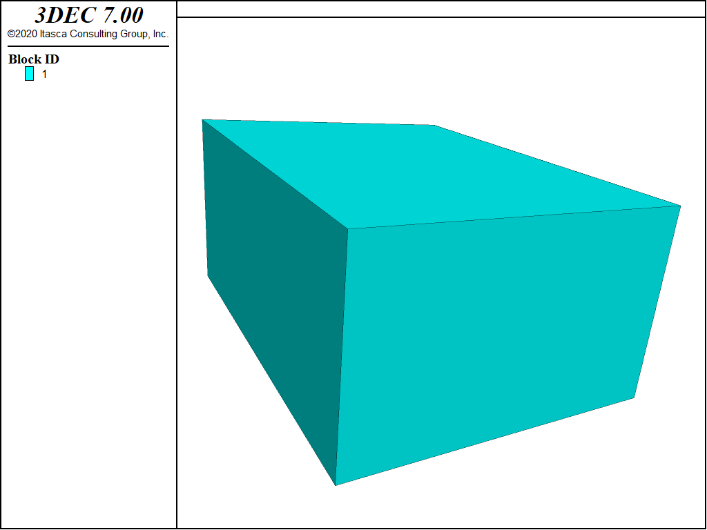
图 8：3DEC 块体图
右键单击 Plot01 选项卡并选择，即可重命名图形。将图形名称改为 Blocks。
操作视图：按住鼠标右键并在图形上拖动鼠标，可旋转模型；按住 right-click + left-click 可平移；使用滚轮放大或缩小。按 Ctrl + R 可将视图重置回 xz 平面。有关视图操作的更详细说明，请右键单击图形并选择。
创建节理组
使用 按节理组切割命令（block cut joint-set） 命令在模型中引入节理。节理可以表示实际岩石节理，也可以作为“构造”切割面来创建特定几何形状。本示例通过设置一系列节理组来创建边坡和楔形体。首先使用关键字 dip、dip-direction 和 origin，在两个位置沿水平方向切割节理。注意：如果不使用关键字，这些属性均采用默认值 0。
单击“simple_wedge”选项卡返回数据文件，并添加以下命令。
block cut joint-set dip 90 dip-direction 180 origin 0,0,0
block cut joint-set dip 90 dip-direction 180 origin 0,50,0
倾向以从北向（\(y\)）顺时针旋转的角度表示。块体沿 \(y\) 轴切割为三（3）部分。使用 RANGE 命令指定块体质心的 \(y\) 坐标范围，将中间块体归入名为“inner block”的分组。其余块体称为“outer blocks”，用于定义充当边界的块体。
block group 'inner block' range pos-y 0 50
block group 'outer blocks' range group 'inner block' not
执行文件。单击“Blocks”选项卡查看块体图。此时可以看到三个不同颜色的块体。在右侧控制面板中，单击“Block Block”项。在“属性（Attributes）”的“标签（Label）”下，选择。

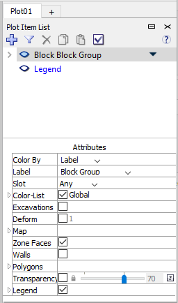
图 9：块体绘图项属性对话框
块体图现在将显示如下：

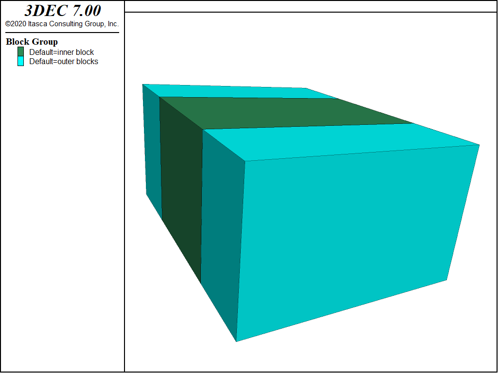
图 10：原始块体分割为三个块体
在模型中引入其他节理组，为后续楔形体在水平和竖直方向上创建滑动面。首先使用 block hide 命令隐藏外部块体。隐藏的块体不会被 \(block cut\) 命令切割。先创建两（2）个缓倾裂隙面，再创建五（5）个等间距的大倾角片理面。
block hide range group 'outer blocks'
block cut joint-set dip 2.5 dip-direction 235 origin 30,0,12.5
block cut joint-set dip 2.5 dip-direction 315 origin 35,0,30
block cut joint-set dip 76 dip-direction 270 spacing 4 num 5 origin 38,0,12.5
spacing 关键字指定节理间的平均间距。num 关键字定义该组中的节理数量。执行文件并单击“Blocks”绘图选项卡。将“标签（Label）”改回“Block”。模型应与下图相似。

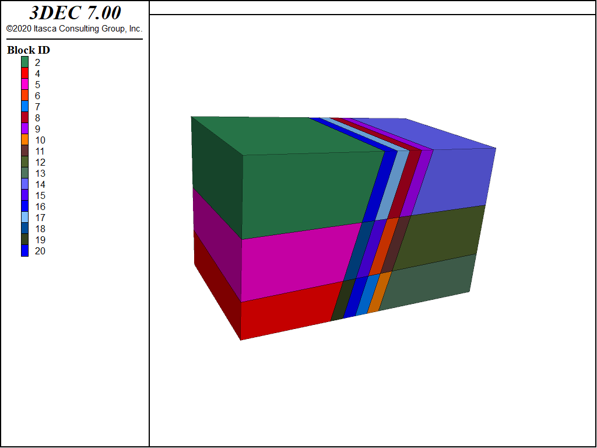
图 11：添加节理面
现在隐藏边坡块体，并创建一个水平节理面，作为边坡开挖面的底面。
block hide range pos-x 30,80 pos-y 0,50 pos-z 0,50
block cut joint-set dip 0 dip-direction 0 origin 0,0,10
block hide range pos-z 0,10
block group 'excavate'
将开挖区域内的块体归入名为“excavate”的分组。
创建楔形体特征
最后，使用以下命令创建界定边坡中楔形体的节理面：
block hide off
block hide range group 'outer blocks'
block hide range pos-z 0,10
block hide range pos-x 55,80
block hide range pos-x 0,30
block cut joint-set dip 70 dip-direction 200 origin 0,35,0
block cut joint-set dip 60 dip-direction 330 origin 50,15,50
此时执行文件，将显示具有大倾角片理的块体，以及界定楔形体的平面，如下图所示。

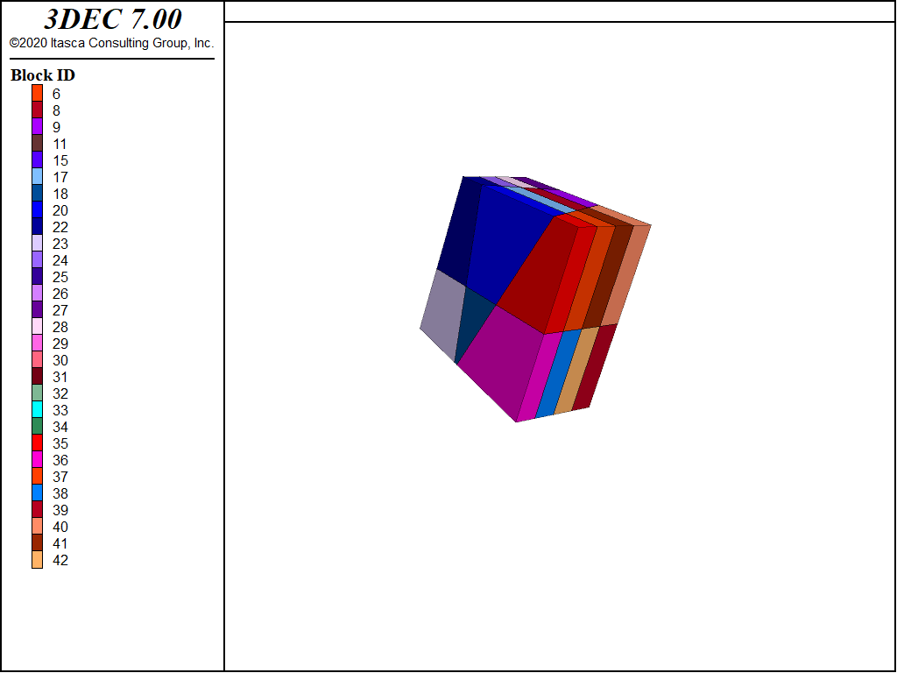
图 12：添加楔形块体
边界条件
接下来，固定边界块体。使用 block fix 命令并指定必要的范围，会将每个块体的质心速度固定为其当前值。本例中的当前质心速度为零。这将阻止任何运动，从而形成边界条件。如果固定一个已经运动的块体，该块体将继续以其当前速度运动。模型底部和片理面后方的块体被固定在原位。外部块体也被固定。“excavate”分组从模型中删除。为便于绘图，外部块体继续保持隐藏。
block hide off
block fix range pos-z 0 10
block fix range pos-x 55 80
block fix range group 'outer blocks'
block hide range group 'outer blocks'
block delete range group 'excavate'
返回“Blocks”图形。选择“构建图形（Build Plot）”按钮（+），然后选择，为图形添加坐标轴。
左键单击并拖动该绘图项的边缘，可调整坐标轴的尺寸。左键单击并拖动该绘图项的中部，可移动坐标轴。图形现在应与下图相似。

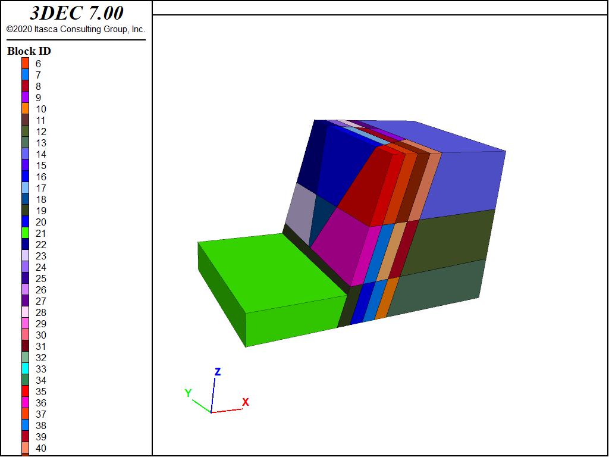
图 13：完成后的模型视图
重力加速度
设置重力命令（model gravity） 命令沿 z 轴负方向施加重力加速度。本示例指定数值为 10 m/sec2。\(x\) 和 \(y\) 分量为 0。
model gravity 0 0 -10
材料属性
注意
٭赋予的是块体材料的质量密度，而非重度。
将材料属性赋予块体和节理。首先必须显示隐藏的块体，以便也为它们赋予属性。
本示例将所有块体的质量密度٭指定为 2,000 个单位（此处为 kg/m3）。假设块体为刚性，忽略块体的可变形性。
block hide off
block property density 2000
接下来赋予节理属性。赋予节理属性之前，需要使用 block contact generate-subcontacts 命令生成子接触。该命令将块体表面三角剖分，并在三角形顶点处添加子接触。每个接触必须包含多个子接触，才能抵抗转动。注意，如果使用可变形块体，且已通过 block zone generate 命令创建网格单元，则不需要执行这一步。在这种情况下，面上的三角剖分与网格单元面一致。所有节理采用相同的法向刚度和剪切刚度，均为 1.0 × 10^9 个单位（此处为 Pa/m；有关节理刚度值的选取，请参阅节理属性（Joint Properties））。实际节理的摩擦角暂设为 89º，内部块体与外部块体之间节理的摩擦角设为 0º。通过分组名称标识这些“边界”节理，以便后续再次识别。
block contact generate-subcontacts
block contact prop stiffness-norm=1e9 stiffness-shear=1e9 friction=89
block contact group 'boundary' range orientation dip 90 dip-dir 180
block contact prop fric=0.0 range group 'boundary'
如果模型在大应变模式下运行，还必须为块体滑动时可能形成的新接触定义属性。通过以下命令完成：
block contact material-table default prop stiffness-norm=1e9 stiffness-shear=1e9 fric=0
注意
在 3DEC 中，只要保留足够字符以唯一识别命令，就可以缩写命令。例如，property 可以缩写为 prop。
对于发生接触的不同块体，可以指定不同的接触属性，因此需要使用“材料表”。本例可以假设所有新接触均无摩擦。
注意，节理可以使用不同的本构模型。本示例使用简单的莫尔—库仑模型（默认模型）。
求解
问题已准备就绪，可以开始求解。观察岩体中指定点的运动，通常有助于判断材料行为。本例监测最接近 \(x\) = 40、\(y\) = 40、\(z\) = 50 这一点的顶点的 \(z\) 方向速度。本示例必须注意选择楔形体上的点，而不是围岩中相应的点。因此，记录历史之前，先按图示隐藏节理一侧的块体。
block hide range plane dip 70 dip-direction 200 origin 0,35,0 below
block history vel-z position (40,40,50)
执行此命令后，程序将返回所选监测点的信息。
然后重新显示块体，并隐藏外部块体：
block hide off
block hide range group 'outer blocks'
最后，使用以下命令使模型达到平衡。循环计算之前，需要使用 设置大变形模式命令（model large-strain） 命令指明采用大应变还是小应变模式。随后可使用 求解模型（model solve） 命令达到平衡。注意，由于最初指定了较高摩擦角，块体不会发生滑动。
model large-strain on
model solve
单击顶部的绿色执行按钮，执行该文件。执行期间，每隔 10 个循环，屏幕会显示当前循环数、计算时间、最大不平衡力（不平衡力的定义见达到平衡（Reaching Equilibrium））以及时钟时间。查看这些数值可判断模型已达到平衡（不平衡力趋近于零）。
选择，并在提示框中输入名称，创建名为“Vel His”的新图形。在控制面板中选择“构建图形（Build Plot）”按钮（+），然后选择，将出现空白历史图。接着，在“属性（Attributes）”选项卡下单击蓝色“+”符号，添加“Z-velocity”历史。注意，每条历史在创建时均分配一个 ID。由于本例只有一条历史，其 ID 为 1。蓝色“+”符号可将 ID 为 1 的历史添加到图中。
选择 并输入“vertical velocity”，更改 \(y\) 轴的标签。
图形应如下所示：

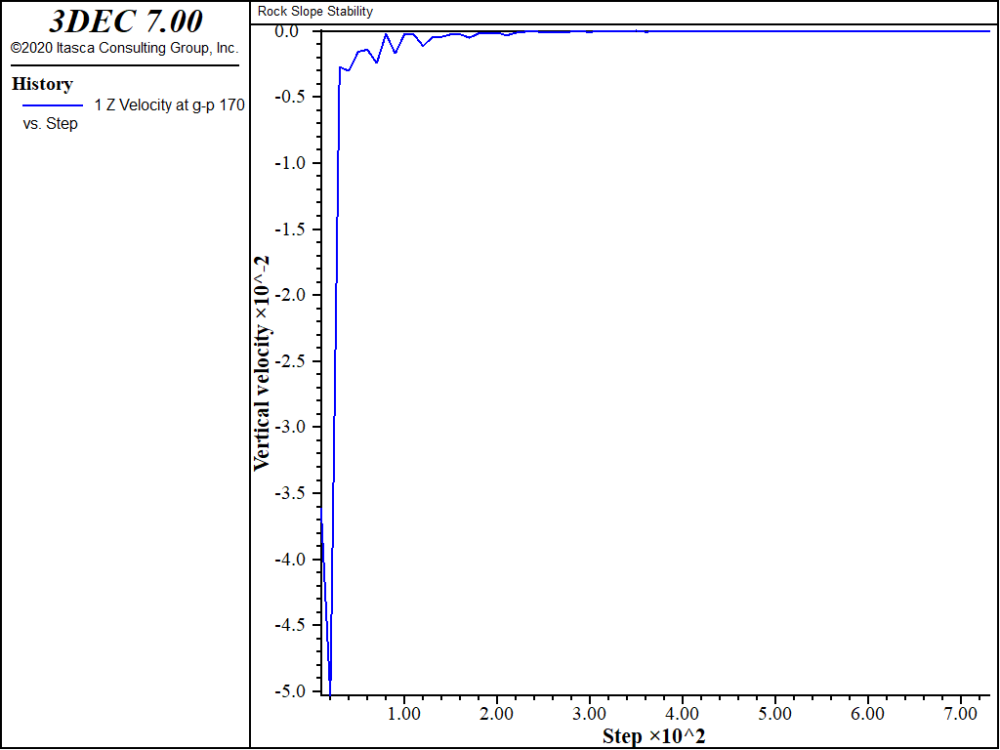
图 14：平衡循环计算过程中的竖直速度时程
绘图图像文件
模型达到平衡后，将初始状态图保存为图像文件可能很有帮助。使用 设置模型标题命令（model title） 命令并在后面添加一个字符串，即可设置图形标题：
model title 'Rock Slope Stability'
标题会被保存，但不会显示在图中。要在图中显示标题，请单击绘图项上方的“视图设置（View Settings）”按钮（图标为方框内的勾选标记），然后在出现的对话框中勾选“作业标题（Job Title）”。

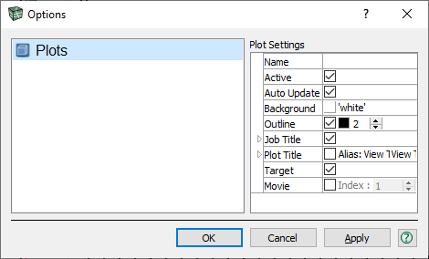
图 15：显示设置对话框
标题将显示在图形顶部、历史图的上方。可以在“选项（Options）”对话框中修改标题的大小、字体、样式（粗体、斜体、粗斜体）和颜色等属性。
随后可以将图形导出为几种不同的文件类型。选择，或直接右键单击图形并选择。必须指定图形和文件名。也可以右键单击并选择，将历史数据以逗号分隔值的形式导出到文本文件。
保存初始状态
保存模型初始状态是一种良好习惯，这样随时都能从该状态重新开始计算（例如开展参数研究）。输入以下命令，将当前状态保存到名为“slope-initial.sav”的文件：
model save 'slope-initial'
如果未指定扩展名，将自动添加文件扩展名 .sav。
降低节理摩擦角并求解
可以通过降低节理摩擦角来研究边坡行为。使用以下命令，将摩擦角降至 6º（可以将命令添加到文件后重新执行，也可以直接在 3DEC GUI 底部的控制台中输入）：
block contact prop fric=6.0 range group 'boundary' not
下一步是在降低摩擦角后继续计算 2000 个循环。此处不宜使用 求解模型（model solve），因为模型很可能无法达到平衡。可以在“Blocks”图形中观察破坏。为便于绘图，在控制面板中打开“视图设置（View Settings）”（方框中的勾选标记），并勾选“作业标题（Job Title）”，以显示之前指定的作业标题。若要添加此图专用的标题，请勾选“图形标题（Plot Title）”并输入文字（例如“楔形体破坏”）。
要观察破坏发展过程，请在屏幕底部的控制台输入以下命令，并按 ：
model cycle 2000
运行该问题后，块体图将展示摩擦角降低所引起的楔形体破坏。破坏模式结合了沿片理面的转动破坏与楔形体的转动破坏。如块体图所示，楔形体破坏占主导地位，转动机制也促成了坍塌。

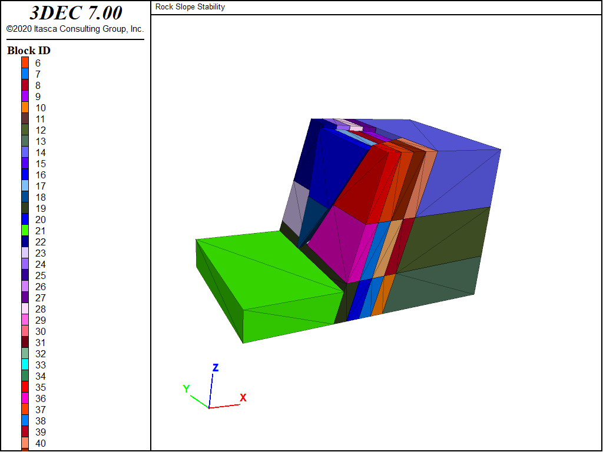
图 16：楔形体下滑
剖面
穿过模型的竖直剖面图可以展示转动机制。单击，并将图形命名为“Cross Section”。在绘图项列表中选择。矢量默认显示位移，但可以通过“类型（Type）”属性更改。在“属性（Attributes）”下，开启“按大小（By-Magnitude）”选项。

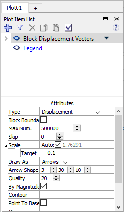
图 17：位移矢量绘图项属性对话框
向图中添加块体。在“属性（Attributes）”中单击复选框，关闭填充。

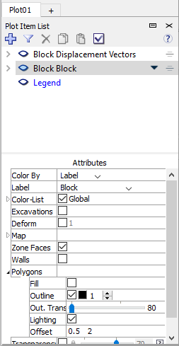
图 18：块体绘图项属性对话框
最后，需要一个切割平面来创建剖面。单击“Block Block”绘图项下的“切割工具（Cutting Tool）”即可完成。默认情况下，该平面垂直于当前视图方向，并在模型中部进行切割。因此，本例平面的法向沿 \(y\) 轴（0,1,0），原点位于 \(y\) = 25 处。

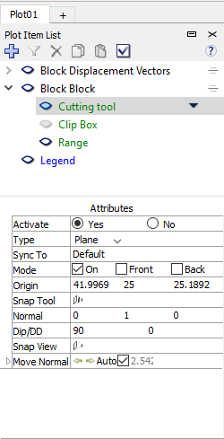
图 19：切割平面绘图项属性对话框
同时为块体位移矢量（Block Displacement Vectors）绘图项启用切割平面。所得剖面显示如下位移矢量：

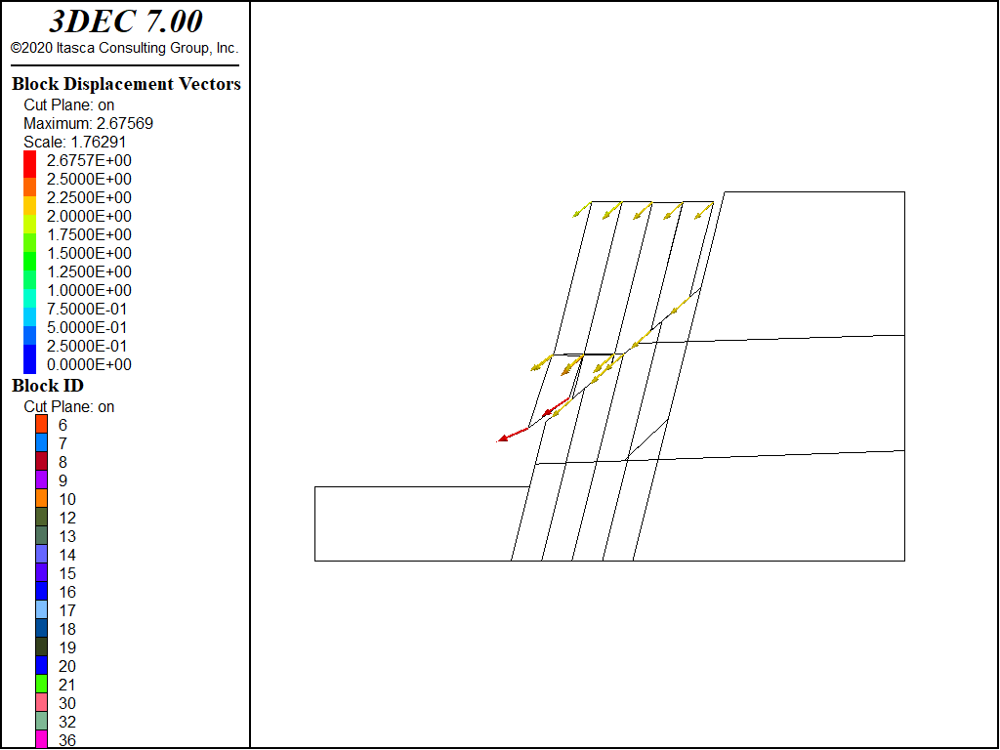
图 20：切割平面上的剖面，显示块体和位移矢量
结束语
入门教程到此结束。单击保存项目。程序会询问是否同时保存模型状态。单击“是（Yes）”，并将模型保存为“slope-final”。此后，您可以尝试使用 3DEC 的其他功能来稳定边坡。输入以下命令，即可从初始状态重新开始：
model restore 'slope-initial'
可以在模型中加入结构单元，详见结构单元（Structural Elements）。
| 这些内容对您有帮助吗？… | FLAC3D © 2019, Itasca | 原文更新于 2020 年 10 月 8 日 |